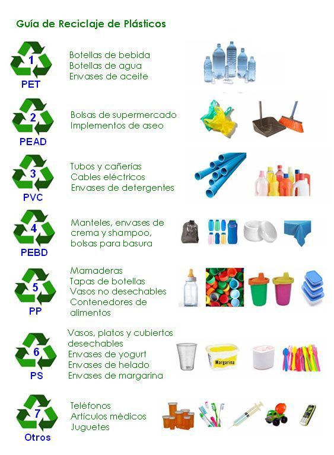

Impacto Ambiental
- Reciclaje Integral de Plásticos: Nuestro Polo Industrial está diseñado para reciclar integralmente una amplia gama de plásticos post consumo, incluyendo botellas de plástico PET, tambores de fertilizantes, insecticidas, agroquímicos y otros desechos plásticos. Estos materiales son recuperados de vertederos, parques, calles, ríos, mares y otras fuentes, reduciendo así la contaminación ambiental y conservando los recursos naturales.
- Reducción de Contaminación: Al reciclar millones de kilogramos de plástico cada año, contribuimos a reducir la contaminación del aire, el agua y el suelo. Además, evitamos que estos desechos plásticos terminen en vertederos o en el medio ambiente, donde pueden causar daños a la vida silvestre y los ecosistemas.
- Uso de Materiales Ecológicos: Nuestros esfuerzos de reciclaje ayudan a reducir la cantidad de desechos plásticos que contaminan los ecosistemas. Esto beneficia a la biodiversidad y asegura la salud y la sostenibilidad de los ecosistemas naturales.

Impacto Social
- Generación de Empleo: La operación de nuestro Polo Industrial es creadora de 900 puestos laborales de mano de obra directa y 600 puestos de trabajo de mano de obra indirecta, que irán en aumento anual en un 20% en todo el país, contribuyendo así al desarrollo económico y social de la región.
- Mejora de la Calidad de Vida: Nuestras viviendas de gran confort, ofrecen una solución habitacional asequible y de calidad para comunidades en general, en todo nivel social, mejorando así su calidad de vida y bienestar.
- Fomento de la Innovación: A través de nuestra inversión en tecnología y procesos innovadores, fomentamos la tecnología de última generación y el desarrollo de soluciones sostenibles en la industria del reciclaje y la construcción.
En Eco Plástica Internacional, estamos comprometidos a maximizar los beneficios ambientales y sociales de nuestras operaciones, contribuyendo así a un futuro más limpio, saludable y sostenible para las generaciones futuras.